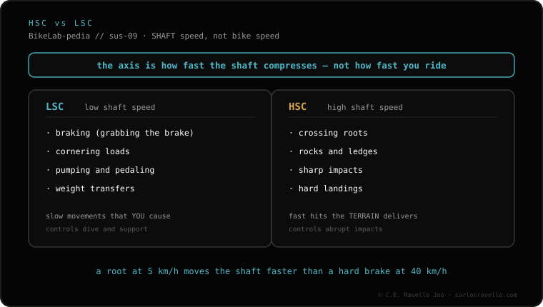

Lock out only on smooth climbs, pavement and sprints, where pedaling sinks the suspension and steals energy. On descents and rough terrain NO: you lose control and traction and you can damage the bike. Treat it as an occasional tool and open it before descending. The lockout doesn't replace a good setup: if the suspension sinks too much, check compression and high- and low-speed compression (HSC/LSC).
The lockout is for gaining efficiency where there are no hits, not for "stiffening" the bike all the time. Used where it doesn't belong, it takes more than it gives.
Smooth climbs. When you climb on even ground, the suspension sinks with every pedal stroke (bobbing) and you lose energy. Locking it out keeps the bike firm and all the push goes into moving forward.
Pavement and link sections. On road or smooth track there are no hits to absorb, so the lockout eliminates the bobbing at no cost.
Sprints. In a standing start or sprint, locking out keeps your force from going into compressing the suspension instead of accelerating.
Descents. Downhill you need the suspension to work to keep the wheels on the ground. With the lockout on, the bike bounces, loses traction and becomes unpredictable.
Rough terrain. Roots, rocks and bumps demand travel. Locking out there transmits every hit to the frame and your hands, and risks damaging suspension internals.

If you need to lock out all the time because the suspension sinks on its own when pedaling, the problem isn't the lockout: it's the setup. Check that your suspension doesn't dive to the bottom easily and, if it sinks too much, look at why it bottoms out and first adjust the low-speed compression (LSC), which is exactly what controls bobbing without fully closing the suspension.
Tell us how it feels uphill and downhill and we'll tell you whether it's lockout, compression or SAG setup. Message us on WhatsApp
It closes the compression so the suspension doesn't sink when pedaling. Useful on smooth climbs, pavement and sprints.
Not advisable: you lose control and traction and risk damage. Always open it before you start descending.
Not if you use it where it belongs. The risk is hitting hard with the lockout on.
© 2026 BikeLab Studio. Content under CC BY 4.0: you may copy, translate and publish it, even for commercial purposes. Citation is mandatory. Without attribution, the license terminates automatically (CC BY 4.0, §6.a) and the use becomes copyright infringement: we request the removal of the content and its deindexing. · Design and ownership: Carlos Ravello Joo